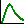

4.11. Special distributions and their properties¶
The following probability distributions are implemented in UncertRadio:
distribution |
code |
notes |
|---|---|---|
Normal distribution |
Normal |
|
Rectangular distribution |
Rectangle |
|
Triangular distribution |
Triangle |
|
(N+x) Rule |
(N+x) Rule |
|
Lognormal distribution |
LogNormal |
|
Gamma distribution |
GammaDist |
|
Binomial+Poisson distribution
|
Binom+Poiss
|
|
Beta distribution, 2
parameters
|
Beta2Dist
|
|
T distribution |
T-Distrib |
|
Beta distribution, 4
parameters
|
Beta4Dist
|
|
Erlang distribution of the
counting duration for preset
count numbers
|
Npreset
|
is a Gamma
distribution for
integer numbers of
counts
|
In addition to better known distributions, like e.g. normal, rectangular or triangular distributions, special distributions can be applied,
the gamma distribution,
the beta distribution and
the t-distribution.
the properties of which are described in the following. Their application requires two or three specific parameters.
In the following, the probability density functions (pdf) and the relation of their parameters to measured data are shortly introduced.
The icon  allow to invoke a dialog for showing the distribution-related parameters of an input quantity. This requires that the row within the table “Values, uncertainties” needs to be highlighted.
4.11.1. The gamma distribution¶
Probability density as a function of \(x\), with parameters \(\alpha\) and \(\beta\) :
\(P_{\gamma}\left( x|\alpha,\beta \right) = \frac{\beta^{\alpha}}{\Gamma(\alpha)}x^{\alpha - 1}e^{- \beta x}\)
\(\Gamma(x)\) is the gamma function, with \(\Gamma(x + 1) = x!.\)
Mean \(E\lbrack x\rbrack\) and variance \(Var\lbrack x\rbrack\) of the probability density are defined by:
\(E\lbrack x\rbrack = \frac{\alpha}{\beta}\) ; \(Var\lbrack x\rbrack = \frac{\alpha}{\beta^{2}}\)
If mean and variance of measured values are attributed to them, the equations then allow to derive the values of the two parameters:
\(\beta = \frac{E\lbrack x\rbrack}{Var\lbrack x\rbrack}\) \(\alpha = \frac{\left( E\lbrack x\rbrack \right)^{2}}{Var\lbrack x\rbrack}\)
The gamma distribution can e.g. be used for counting rates or for a detection probability with a larger relative uncertainty.
4.11.2. The beta distribution¶
Probability density as a function of \(x\), with parameters \(\alpha\) and \(\beta\) :
\(P_{\beta}\left( x|\alpha,\beta \right) = \frac{1}{B(\alpha,\beta)}x^{\alpha - 1}(1 - x)^{\beta - 1}\)
\(B(\alpha,\beta) = \Gamma(\alpha)\Gamma(\beta)/\Gamma(\alpha + \beta)\) is the beta function.
Mean \(E\lbrack x\rbrack\) and variance \(Var\lbrack x\rbrack\) of the probability density are defined by:
\(E\lbrack x\rbrack = \frac{\alpha}{\alpha + \beta}\) ; \(Var\lbrack x\rbrack = \frac{\alpha\beta}{(\alpha + \beta)^{2}(\alpha + \beta + 1)}\)
If mean and variance of measured values are attributed to them, the equations then allow to derive the values of the two parameters:
\(\beta = \alpha\left( \frac{1}{E\lbrack x\rbrack} - 1 \right);\) \(\alpha = E\lbrack x\rbrack\left( \frac{E\lbrack x\rbrack\left( 1 - E\lbrack x\rbrack \right)}{Var\lbrack x\rbrack} - 1 \right)\)
or (according to NIST):
\(\beta = \frac{\alpha}{\bar{x}}\left( 1 - \bar{x} \right);\) \(\alpha = \bar{x}\left( \frac{\bar{x}(1 - \bar{x})}{s^{2}} - 1 \right)\)
In contrast to the gamma distribution, the beta distribution is defined within the restricted range \(0 \leq x \leq 1\). It is thus well suited for a detection probability which normally hast he same support.
4.11.3. The t-distribution¶
For convenience, not the standard Student-t-distribution is applied, but the “non-standard“ t-distribution, also called the “Scaled-and-shifted” t-distribution. Its parameters are the number \(\upsilon\) of degrees of freedom and the two parameters \(\widehat{\mu}\) (“shift“) and \({\widehat{\sigma}}^{2}\) (“scaling“).
The Probability density function:
Usually, this is written as \(P_{\upsilon}(\widehat{\mu},{\widehat{\sigma}}^{2})\).
Mean \(E\lbrack x\rbrack\) and variance \(Var\lbrack x\rbrack\) of the probability density are defined by:
\(E\lbrack x\rbrack = \widehat{\mu}\); \(\upsilon > 1\)
\({Var}\lbrack x\rbrack = {\widehat{\sigma}}^{2}\frac{\upsilon}{\upsilon - 2}\) ; \(\upsilon > 2\)
For deriving values attributed to the parameters, assume that a series of repeated measurements \(x_{1},x_{2},\ldots,x_{n}\) of normal-distributed values is given, where \(\widehat{\mu}\) and \({\widehat{\sigma}}^{2}\) are considered as unknown. This leads to the probability density of the input quantity \(X\) given by the \(t\)-distribution of the form
\(P_{\upsilon}(\overline{x},\frac{s^{2}}{n})\)
with following parameter values (\(\nu = n - 1\)):
This leads to the following values of the expectation values given above:
\(E\lbrack x\rbrack = \overline{x}\)
\({Var}\lbrack x\rbrack = \frac{s^{2}}{n}\frac{\upsilon}{\upsilon - 2} = \frac{s^{2}}{n}\frac{n - 1}{n - 3}\);
In this case, \(\overline{x}\) and \(\frac{s^{2}}{n}\) are considered as the input values of the t-distribution as obtained by measurements, while the factor \((n - 1)/(n - 3)\) follows from a property of the t-distribution.
As the t-distribution refers to a series of measurements, the associated input variable has to be declared as a mean variable in UncertRadio (see Applying means). This guarantees that the parameter values \(n\), or \(\upsilon = df = n - 1\), and \(\ mu = \overline{x},\ \ sigma = \ s\) are known within the program; they may be displayed by the following dialog invoked by the toolbar icon :
Random values \(t_{k}\) of this distribution density are sampled from \(t_{k} = \overline{x} + \frac{s^{2}}{n}t_{0k}\), where the \(t_{0k}\) are random values of the standard-t-distribution, produced by a random generator. The factor \((n - 1)/(n - 3)\) must not be part of the formula for \(t_{k}\); it implicitly results from applying the \(t_{0k}\)-values.
4.11.4. Generating random numbers¶
For gamma-distributed random numbers, the generator by Marsaglia and Wang (2000) and another generator taken from Alan Mille’s repository of Fortran-90 routines are applied. For the two other special distributions, also routines from Allan Miller’s repository are used.